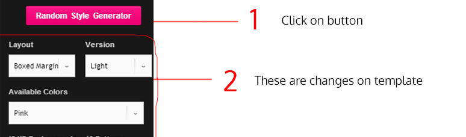
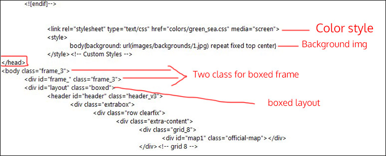

How to Create Template from Random Style Generator? - top

* After saw changes, open one of your HTML template in notepad and edit file, follow me:
1) Layout: in html page find "layout" and change class to boxed
2) Version: if version was dark you should add this code before close head:
<link rel="stylesheet" type="text/css" href="styles/dark.css" media="screen" />
3) Colors: you should add this code before close head: (green_see is your color)
<link rel="stylesheet" type="text/css" href="colors/green_sea.css" media="screen" />
please see bellow image:
*** NOTE:Now frames are not available, this feature will add soon.

How to change Twitter account widget? - top
1) go to js Folder Open custom.js in Notepade
2) find below code and change it
username: 'behzadg1',
3) go to folder twitter then open index.php
4) You need to have a twitter App for your usage in order to obtain OAuth credentials, see https://dev.twitter.com/apps for help.
5) After creating your app, configure index.php with your OAuth credentials, and enable caching if you desire. Your cache directory of choice must be writable by PHP.
6) That's all.
How to change template colors? - top
go to folder colors and open one css file and edit colors. If you know a little about CSS, you can edit one color css file from colors folder then change it and then insert in you HTML file.
How To add Row and Column ? - top
1) for add row see below code:
<div class="row clearfix">
Your Content
</div>
2) for add row+column see below code:
<div class="row clearfix">
<div class="grid_6">
Your Content 1/2
</div>
</div>
<div class="row clearfix">
<div class="grid_6">
Your Content 1/2
</div>
</div>
3) More Columns Sizes
.grid_12 - 1/1
.grid_10 - 5/6
.grid_9 - 3/4
.grid_8 - 2/3
.grid_6 - 1/2
.grid_4 - 1/3
.grid_3 - 1/4
.grid_2 - 1/6
Sticky Header ON/OFF - top
1) open HTML file in notepad.
2) find "headdown"
2) add class "my_sticky" Done.
2) example class="headdown my_sticky"
How to change google webfont ? - top
1) go to this site and chose your font: http://www.google.com/fonts/
2) go to html file find "Marcellus" and then change it with your font name.
Example: family=Open+Sans
<link rel='stylesheet' type='text/css' href='http://fonts.googleapis.com/css?family=Open+Sans'>
3) go to style.css and find any name "Marcellus" then change them to your font name. Like: font-family: 'Open Sans'
How To change background image and Layout Version? - top
1) for change body background add this line to your body class in style.css : background: #333 url(images/backgrounds/1.jpg) repeat;
2) also you can add this code before close head : <style>body{background: url(images/backgrounds/16.jpg) repeat fixed} </style>
3) for change full, boxed, boxed-margin background find them classes and change it, classes are : .full, .boxed, .boxed-margin
How To change Breadcrumb background? - top
Add this code before close head : <style> .breadcrumb-place{background: url(images/breadcrumb20.jpg)} </style>
How To use 660 retina Icon ? - top
example icon = <i class="icon-user"></i>
example metro icon = <i class="icons-social-facebook"></i>
How To change disqus_shortname ? - top
find "officialtemplate" then change it to your shortname
if you havn't shortname please visit www.disqus.com and create one shortname
How To change Layouts to Boxed, Fullwide and boxed-margin? - top
1) open HTML file in Notepade
2) find below code and change it like example's :
<div id="layout" class="full">
-) Example's
<div id="layout" class="boxed-margin">
<div id="layout" class="boxed">
How To change Contact Form Email ? - top
1) Open processForm.php in Notepade
2) find "your name" and "your_mail@gmail.com"
3) now replace your name and email then save it and close
How to change Address in Google Map? - top
open contact.html and at end of page find "address" and change it.
How To Change CSS3 Load Animation when scrolling Down? - top
1) add this code to your elements:
class="animated" data-gen="fadeInUp"
2) for change animation you should change data-gen="fadeInUp"
3) animations:
fadeInUp
fadeInDown
fadeInLeft
fadeInRight
4) also please check other animation classes here: http://daneden.me/animate/
Explanation about more classes - top
mt is margin-top: 20px
mtt is margin-top: 30px
mtf is margin-top: 40px
mts is margin-top: 70px
mb is margin-bottom: 20px
mbt is margin-bottom: 30px
mbf is margin-bottom: 40px
mbs is margin-bottom: 70px
fll is float: left with margin
flr is float: right with margin
righter is float: right
lefter is float: left
tac is text-align: center
tal is text-align: left
tar is text-align: right
two-radius is border-radius: 2px
three-radius is border-radius: 3px
four-radius isborder-radius: 4px
five-radius is border-radius: 5px
six-radius is border-radius: 6px
ten-radius is border-radius: 10px
circle-radius is border-radius: 50%
.mi { margin-right: 4px }
.mid { margin-right: 8px }
.mii { margin-left: 4px }
.miid { margin-left: 8px }
.tacIMG, .tacIMG img { margin: 0 auto !important; text-align: center }
How to change Instagram widget with my instagram acc ? - top
go to this site: http://snapwidget.com/ and create your widget then copy your iframe code and then go to html file, find instagram and now paste your code instead current iframe code.
How to change Countdown Event Timer ? - top
in "under_construction page" find and change this: date: "31 December 2013 23:59:59"
How to Turn Off scroll load animations ? - top
go to custom.js and find each "animated" then change them to "Turn_Off"